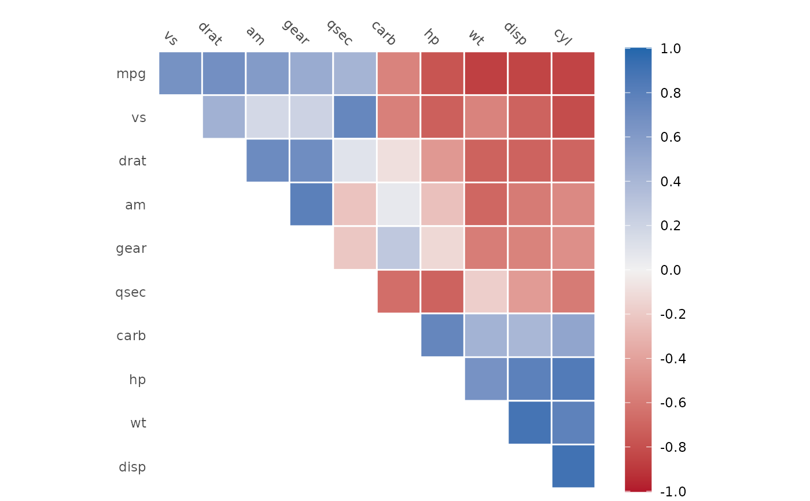
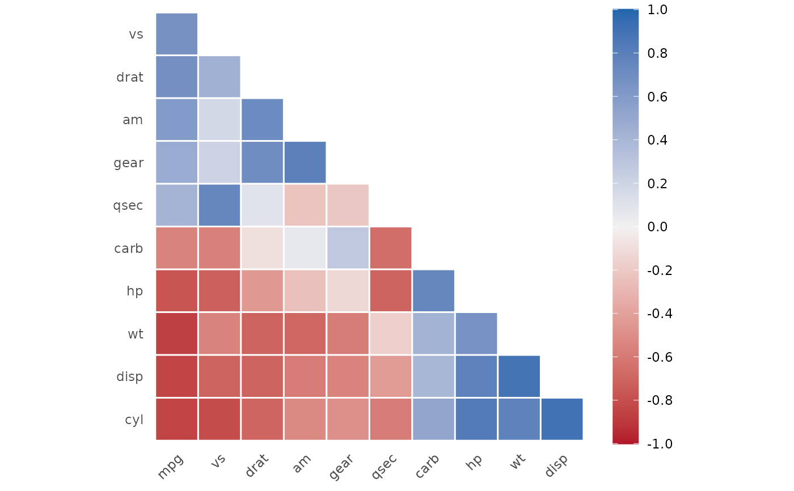
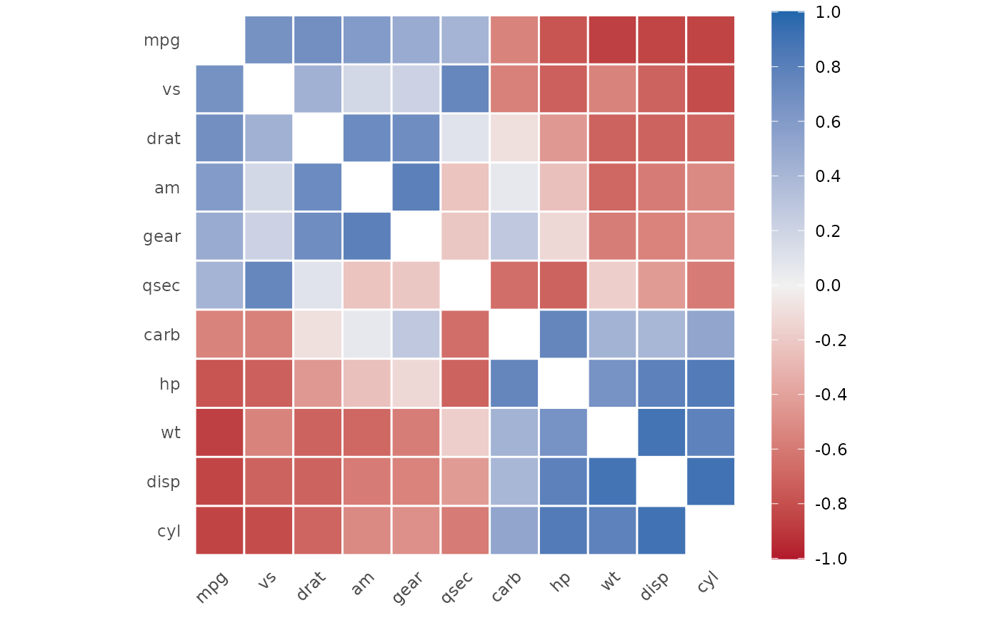

This method provides a good first visualization of the correlation matrix.
Arguments
- object
A
cor_dfobject.- ...
this argument is ignored.
- method
String specifying the arrangement (clustering) method. Clustering is achieved via
seriate, which can be consulted for a complete list of clustering methods. Default = "PCA".- triangular
Which part of the correlation matrix should be shown? Must be one of
"upper","lower", or"full", and defaults to"upper".- barheight
A single, non-negative number. Is passed to
ggplot2::guide_colourbar()to determine the height of the guide colorbar. Defaults to 20, is likely to need manual adjustments.- low
A single color. Is passed to
ggplot2::scale_fill_gradient2(). The color of negative correlation. Defaults to"#B2182B".- mid
A single color. Is passed to
ggplot2::scale_fill_gradient2(). The color of no correlation. Defaults to"#F1F1F1".- high
A single color. Is passed to
ggplot2::scale_fill_gradient2(). The color of the positive correlation. Defaults to"#2166AC".
Examples
x <- correlate(mtcars)
#> Correlation computed with
#> • Method: 'pearson'
#> • Missing treated using: 'pairwise.complete.obs'
autoplot(x)
#> Warning: Using `size` aesthetic for lines was deprecated in ggplot2 3.4.0.
#> ℹ Please use `linewidth` instead.
#> ℹ The deprecated feature was likely used in the corrr package.
#> Please report the issue at
#> <https://github.com/tidymodels/corrr/issues>.

autoplot(x, triangular = "lower")

autoplot(x, triangular = "full")
